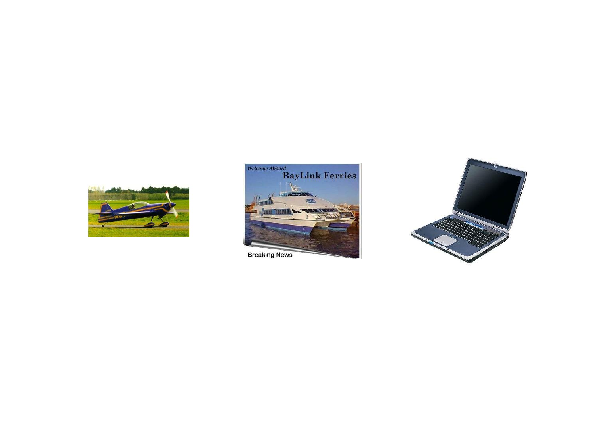
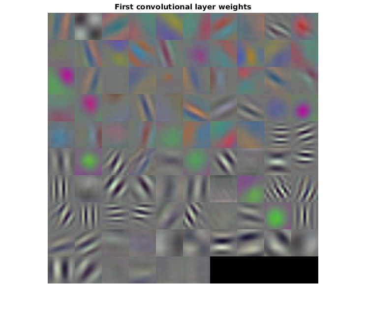

Image Category Classification Using Deep Learning
This example shows how to use a pre-trained Convolutional Neural Network (CNN) as a feature extractor for training an image category classifier.
Contents
- Overview
- Download Image Data
- Load Images
- Download Pre-trained Convolutional Neural Network (CNN)
- Load Pre-trained CNN
- Pre-process Images For CNN
- Prepare Training and Test Image Sets
- Extract Training Features Using CNN
- Train A Multiclass SVM Classifier Using CNN Features
- Evaluate Classifier
- Try the Newly Trained Classifier on Test Images
- References
Overview
A Convolutional Neural Network (CNN) is a powerful machine learning technique from the field of deep learning. CNNs are trained using large collections of diverse images. From these large collections, CNNs can learn rich feature representations for a wide range of images. These feature representations often outperform hand-crafted features such as HOG, LBP, or SURF. An easy way to leverage the power of CNNs, without investing time and effort into training, is to use a pre-trained CNN as a feature extractor.
In this example, images from Caltech 101 are classified into categories using a multiclass linear SVM trained with CNN features extracted from the images. This approach to image category classification follows the standard practice of training an off-the-shelf classifier using features extracted from images. For example, the
Classification Using Bag Of Features> example uses SURF features within a bag of features framework to train a multiclass SVM. The difference here is that instead of using image features such as HOG or SURF, features are extracted using a CNN. And, as this example will show, the classifier trained using CNN features provides close to 100% accuracy, which is higher than the accuracy achieved using bag of features and SURF.
Note: This example requires Neural Network Toolbox™, Parallel Computing Toolbox™, Statistics and Machine Learning Toolbox™, and a CUDA-capable GPU card.
function DeepLearningImageClassificationExample
Download Image Data
The category classifier will be trained on images from . Caltech 101 is one of the most widely cited and used image data sets, collected by Fei-Fei Li, Marco Andreetto, and Marc 'Aurelio Ranzato.
% Download the compressed data set from the following location url = 'http://www.vision.caltech.edu/Image_Datasets/Caltech101/101_ObjectCategories.tar.gz'; % Store the output in a temporary folder outputFolder = fullfile(tempdir, 'caltech101'); % define output folder
Note: Download time of the data depends on your internet connection. The next set of commands use MATLAB to download the data and will block MATLAB. Alternatively, you can use your web browser to first download the dataset to your local disk. To use the file you downloaded from the web, change the 'outputFolder' variable above to the location of the downloaded file.
if ~exist(outputFolder, 'dir') % download only once disp('Downloading 126MB Caltech101 data set...'); untar(url, outputFolder); end
Load Images
Instead of operating on all of Caltech 101, which is time consuming, use three of the categories: airplanes, ferry, and laptop. The image category classifier will be trained to distinguish amongst these six categories.
rootFolder = fullfile(outputFolder, '101_ObjectCategories'); categories = {'airplanes', 'ferry', 'laptop'};
Create an ImageDatastore to help you manage the data. Because ImageDatastore operates on image file locations, images are not loaded into memory until read, making it efficient for use with large image collections.
imds = imageDatastore(fullfile(rootFolder, categories), 'LabelSource', 'foldernames');
The imds variable now contains the images and the category labels associated with each image. The labels are automatically assigned from the folder names of the image files. Use countEachLabel to summarize the number of images per category.
tbl = countEachLabel(imds)
tbl =
Label Count
_________ _____
airplanes 800
ferry 67
laptop 81
Because imds above contains an unequal number of images per category, let's first adjust it, so that the number of images in the training set is balanced.
minSetCount = min(tbl{:,2}); % determine the smallest amount of images in a category
% Use splitEachLabel method to trim the set.
imds = splitEachLabel(imds, minSetCount, 'randomize');
% Notice that each set now has exactly the same number of images.
countEachLabel(imds)
ans =
Label Count
_________ _____
airplanes 67
ferry 67
laptop 67
Below, you can see example images from three of the categories included in the dataset.
% Find the first instance of an image for each category airplanes = find(imds.Labels == 'airplanes', 1); ferry = find(imds.Labels == 'ferry', 1); laptop = find(imds.Labels == 'laptop', 1); figure subplot(1,3,1); imshow(imds.Files{airplanes}) subplot(1,3,2); imshow(imds.Files{ferry}) subplot(1,3,3); imshow(imds.Files{laptop})
Download Pre-trained Convolutional Neural Network (CNN)
Now that the images are prepared, you will need to download a pre-trained CNN model for this example. There are several pre-trained networks that have gained popularity. Most of these have been trained on the ImageNet dataset, which has 1000 object categories and 1.2 million training images[1]. "AlexNet" is one such model and can be downloaded from MatConvNet[2,3]:
% Location of pre-trained "AlexNet" cnnURL = 'http://www.vlfeat.org/matconvnet/models/beta16/imagenet-caffe-alex.mat'; % Store CNN model in a temporary folder cnnMatFile = fullfile(tempdir, 'imagenet-caffe-alex.mat');
Note: Download time of the data depends on your internet connection. The next set of commands use MATLAB to download the data and will block MATLAB. Alternatively, you can use your web browser to first download the dataset to your local disk. To use the file you downloaded from the web, change the 'cnnMatFile' variable above to the location of the downloaded file.
if ~exist(cnnMatFile, 'file') % download only once disp('Downloading pre-trained CNN model...'); websave(cnnMatFile, cnnURL); end
Load Pre-trained CNN
The CNN model is saved in MatConvNet's format [3]. Load the MatConvNet network data into convnet, a SeriesNetwork object from Neural Network Toolbox™, using the helper function helperImportMatConvNet. A SeriesNetwork object can be used to inspect the network architecture, classify new data, and extract network activations from specific layers.
% Load MatConvNet network into a SeriesNetwork
convnet = helperImportMatConvNet(cnnMatFile)
convnet =
SeriesNetwork with properties:
Layers: [23x1 nnet.cnn.layer.Layer]
convnet.Layers defines the architecture of the CNN.
% View the CNN architecture
convnet.Layers
ans =
23x1 Layer array with layers:
1 'input' Image Input 227x227x3 images with 'zerocenter' normalization
2 'conv1' Convolution 96 11x11x3 convolutions with stride [4 4] and padding [0 0]
3 'relu1' ReLU ReLU
4 'norm1' Cross Channel Normalization cross channel normalization with 5 channels per element
5 'pool1' Max Pooling 3x3 max pooling with stride [2 2] and padding [0 0]
6 'conv2' Convolution 256 5x5x48 convolutions with stride [1 1] and padding [2 2]
7 'relu2' ReLU ReLU
8 'norm2' Cross Channel Normalization cross channel normalization with 5 channels per element
9 'pool2' Max Pooling 3x3 max pooling with stride [2 2] and padding [0 0]
10 'conv3' Convolution 384 3x3x256 convolutions with stride [1 1] and padding [1 1]
11 'relu3' ReLU ReLU
12 'conv4' Convolution 384 3x3x192 convolutions with stride [1 1] and padding [1 1]
13 'relu4' ReLU ReLU
14 'conv5' Convolution 256 3x3x192 convolutions with stride [1 1] and padding [1 1]
15 'relu5' ReLU ReLU
16 'pool5' Max Pooling 3x3 max pooling with stride [2 2] and padding [0 0]
17 'fc6' Fully Connected 4096 fully connected layer
18 'relu6' ReLU ReLU
19 'fc7' Fully Connected 4096 fully connected layer
20 'relu7' ReLU ReLU
21 'fc8' Fully Connected 1000 fully connected layer
22 'prob' Softmax softmax
23 'classificationLayer' Classification Output cross-entropy with 'n01440764', 'n01443537', and 998 other classes
The first layer defines the input dimensions. Each CNN has a different input size requirements. The one used in this example requires image input that is 227-by-227-by-3.
% Inspect the first layer
convnet.Layers(1)
ans =
ImageInputLayer with properties:
Name: 'input'
InputSize: [227 227 3]
DataAugmentation: 'none'
Normalization: 'zerocenter'
The intermediate layers make up the bulk of the CNN. These are a series of convolutional layers, interspersed with rectified linear units (ReLU) and max-pooling layers [2]. Following the these layers are 3 fully-connected layers.
The final layer is the classification layer and its properties depend on the classification task. In this example, the CNN model that was loaded was trained to solve a 1000-way classification problem. Thus the classification layer has 1000 classes from the ImageNet dataset.
% Inspect the last layer convnet.Layers(end) % Number of class names for ImageNet classification task numel(convnet.Layers(end).ClassNames)
ans =
ClassificationOutputLayer with properties:
OutputSize: 1000
LossFunction: 'crossentropyex'
ClassNames: {1000x1 cell}
Name: 'classificationLayer'
ans =
1000
Note that the CNN model is not going to be used for the original classification task. It is going to be re-purposed to solve a different classification task on the Caltech 101 dataset.
Pre-process Images For CNN
As mentioned above, convnet can only process RGB images that are 227-by-227. To avoid re-saving all the images in Caltech 101 to this format, setup the imds read function, imds.ReadFcn, to pre-process images on-the-fly. The imds.ReadFcn is called every time an image is read from the ImageDatastore.
% Set the ImageDatastore ReadFcn
imds.ReadFcn = @(filename)readAndPreprocessImage(filename);
Note that other CNN models will have different input size constraints, and may require other pre-processing steps.
function Iout = readAndPreprocessImage(filename) I = imread(filename); % Some images may be grayscale. Replicate the image 3 times to % create an RGB image. if ismatrix(I) I = cat(3,I,I,I); end % Resize the image as required for the CNN. Iout = imresize(I, [227 227]); % Note that the aspect ratio is not preserved. In Caltech 101, the % object of interest is centered in the image and occupies a % majority of the image scene. Therefore, preserving the aspect % ratio is not critical. However, for other data sets, it may prove % beneficial to preserve the aspect ratio of the original image % when resizing. end
Prepare Training and Test Image Sets
Split the sets into training and validation data. Pick 30% of images from each set for the training data and the remainder, 70%, for the validation data. Randomize the split to avoid biasing the results. The training and test sets will be processed by the CNN model.
[trainingSet, testSet] = splitEachLabel(imds, 0.3, 'randomize');
Extract Training Features Using CNN
Each layer of a CNN produces a response, or activation, to an input image. However, there are only a few layers within a CNN that are suitable for image feature extraction. The layers at the beginning of the network capture basic image features, such as edges and blobs. To see this, visualize the network filter weights from the first convolutional layer. This can help build up an intuition as to why the features extracted from CNNs work so well for image recognition tasks. Note that visualizing deeper layer weights is beyond the scope of this example. You can read more about that in the work of Zeiler and Fergus [4].
% Get the network weights for the second convolutional layer w1 = convnet.Layers(2).Weights; % Scale and resize the weights for visualization w1 = mat2gray(w1); w1 = imresize(w1,5); % Display a montage of network weights. There are 96 individual sets of % weights in the first layer. figure montage(w1) title('First convolutional layer weights')
Notice how the first layer of the network has learned filters for capturing blob and edge features. These "primitive" features are then processed by deeper network layers, which combine the early features to form higher level image features. These higher level features are better suited for recognition tasks because they combine all the primitive features into a richer image representation [5].
You can easily extract features from one of the deeper layers using the activations method. Selecting which of the deep layers to choose is a design choice, but typically starting with the layer right before the classification layer is a good place to start. In convnet, the this layer is named 'fc7'. Let's extract training features using that layer.
featureLayer = 'fc7'; trainingFeatures = activations(convnet, trainingSet, featureLayer, ... 'MiniBatchSize', 32, 'OutputAs', 'columns');
Note that the activations are computed on the GPU and the 'MiniBatchSize' is set 32 to ensure that the CNN and image data fit into GPU memory. You may need to lower the 'MiniBatchSize' if your GPU runs out of memory.
Also, the activations output is arranged as columns. This helps speed-up the multiclass linear SVM training that follows.
Train A Multiclass SVM Classifier Using CNN Features
Next, use the CNN image features to train a multiclass SVM classifier. A fast Stochastic Gradient Descent solver is used for training by setting the fitcecoc function's 'Learners' parameter to 'Linear'. This helps speed-up the training when working with high-dimensional CNN feature vectors, which each have a length of 4096.
% Get training labels from the trainingSet trainingLabels = trainingSet.Labels; % Train multiclass SVM classifier using a fast linear solver, and set % 'ObservationsIn' to 'columns' to match the arrangement used for training % features. classifier = fitcecoc(trainingFeatures, trainingLabels, ... 'Learners', 'Linear', 'Coding', 'onevsall', 'ObservationsIn', 'columns');
Evaluate Classifier
Repeat the procedure used earlier to extract image features from testSet. The test features can then be passed to the classifier to measure the accuracy of the trained classifier.
% Extract test features using the CNN testFeatures = activations(convnet, testSet, featureLayer, 'MiniBatchSize',32); % Pass CNN image features to trained classifier predictedLabels = predict(classifier, testFeatures); % Get the known labels testLabels = testSet.Labels; % Tabulate the results using a confusion matrix. confMat = confusionmat(testLabels, predictedLabels); % Convert confusion matrix into percentage form confMat = bsxfun(@rdivide,confMat,sum(confMat,2))
confMat =
1 0 0
0 1 0
0 0 1
% Display the mean accuracy
mean(diag(confMat))
ans =
1
Try the Newly Trained Classifier on Test Images
You can now apply the newly trained classifier to categorize new images.
newImage = fullfile(rootFolder, 'airplanes', 'image_0690.jpg'); % Pre-process the images as required for the CNN img = readAndPreprocessImage(newImage); % Extract image features using the CNN imageFeatures = activations(convnet, img, featureLayer);
% Make a prediction using the classifier
label = predict(classifier, imageFeatures)
label =
airplanes
References
[1] Deng, Jia, et al. "Imagenet: A large-scale hierarchical image database." Computer Vision and Pattern Recognition, 2009. CVPR 2009. IEEE Conference on. IEEE, 2009.
[2] Krizhevsky, Alex, Ilya Sutskever, and Geoffrey E. Hinton. "Imagenet classification with deep convolutional neural networks." Advances in neural information processing systems. 2012.
[3] Vedaldi, Andrea, and Karel Lenc. "MatConvNet-convolutional neural networks for MATLAB." arXiv preprint arXiv:1412.4564 (2014).
[4] Zeiler, Matthew D., and Rob Fergus. "Visualizing and understanding convolutional networks." Computer Vision-ECCV 2014. Springer International Publishing, 2014. 818-833.
[5] Donahue, Jeff, et al. "Decaf: A deep convolutional activation feature for generic visual recognition." arXiv preprint arXiv:1310.1531 (2013).
end